Q-Learning_with_Keras
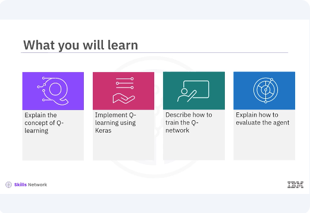
Welcome to this video on Q-learning with Keras. After watching this video, you'll be able to: Explain the concept of Q-learning. Implement Q-learning using Keras. Describe how to train the Q-network. Explain how to evaluate the agent.
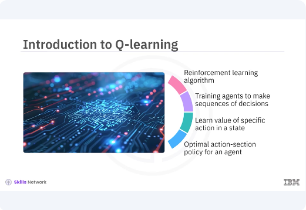
Q-learning is a widely used reinforcement learning algorithm. Reinforcement learning is a powerful paradigm in machine learning that focuses on training agents to make sequences of decisions by maximizing a notion of cumulative reward. Q-learning is an off policy algorithm that seeks to learn the value of taking a specific action in a given state and aims to find the optimal action selection policy for an agent.
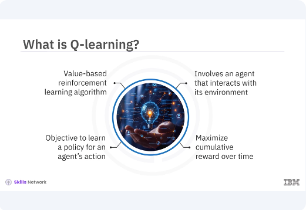
Q-learning is a type of value based reinforcement learning algorithm. Unlike other types of learning like supervised or unsupervised, reinforcement learning involves an agent that interacts with its environment, takes actions, and learns from the consequences of these actions. The core objective of Q-learning is to learn a policy that tells an agent what action to take under what circumstances to maximize its cumulative reward over time.
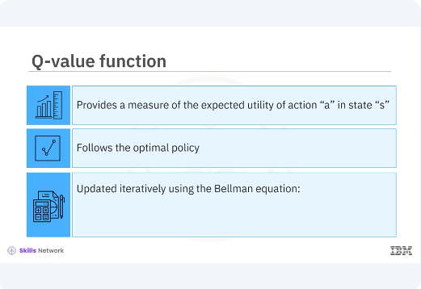
The essence of Q-learning lies in the Q-value function, Q(s, a). This function provides a measure of the expected utility of taking action a in state S and thereafter following the optimal policy. The Q-values are updated iteratively using the Bellman equation, which incorporates both the immediate reward and the estimated future rewards.
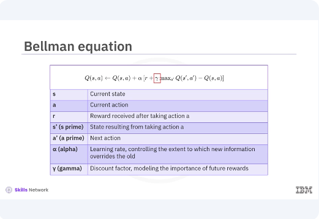
The update rule for the Q-value is given by the equation as shown. In the equation, s represents the current state, a represents the current action, r denotes the reward received after taking action a. s', s', is the state resulting from taking action a. A', a', represents the next action. Alpha is the learning rate controlling the extent to which new information overrides the old. Gamma is the discount factor which models the importance of future rewards.
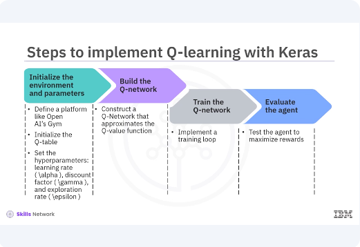
Implementing Q-learning involves several steps, each critical to the agent's ability to learn and perform well. Initialize the environment and parameters. Define the environment using a platform like OpenAI's Gym. Initialize the Q-table, a table of state action pairs. Set the hyper parameters, learning rate Alpha, discount factor Gamma, and exploration rate Epsilon. Build the Q-network. Utilize Keras to construct a neural network that approximates the Q-value function. This Q-network will replace the Q-table for environments with large state spaces. Train the Q-network. Implement a training loop where the agent interacts with the environment, selects actions, receives rewards, transitions to new states, and updates the Q-values. Evaluate the agent. After training, test the agent in the environment to assess its performance and ability to maximize rewards. Let's look at each step in detail.
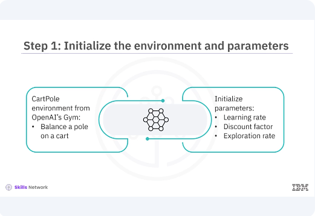
To start with Q-learning, you need an environment where your agent will interact. For simplicity, you use the CartPole environment from OpenAI's Gym. The CartPole environment is a classic control problem where the goal is to balance a pole on a cart. You also initialize important parameters like the learning rate, discount factor, and exploration rate. These parameters significantly influence the learning process and the agent's performance.
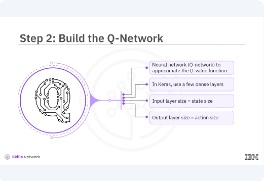
In traditional Q-learning, you use a Q-table to store Q-values for all state action pairs. However, for environments with large or continuous state spaces, a Q-table becomes impractical. Instead, you use our neural network, Q-network, to approximate the Q-value function. In Keras, you can build this Q-network using a few dense layers. The input layer size should match the state size and the output layer size should match the action size. The hidden layers can have any architecture, but typically two or three hidden layers with ReLU activation functions are used.
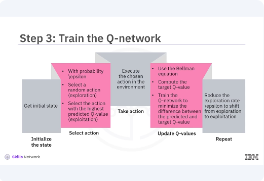
Training the Q-network involves several key steps. Initialize the state, reset the environment to get the initial state, select action, use an Epsilon greedy policy to balance exploration and exploitation. With probability or Epsilon, select a random action, exploration, or select the action with the highest predicted Q-value exploitation. Take action. Execute the chosen action in the environment to receive the next state and reward. Update Q-values. Use the Bellman equation to update the Q-values. Compute the target Q-value for the current state action pair and train the Q-network to minimize the difference between the predicted Q-value and the target Q-value. Repeat. Continue the process until the agent reaches a terminal state or achieves the goal. Over multiple episodes, gradually reduce the exploration rate, Epsilon, to shift from exploration to exploitation.
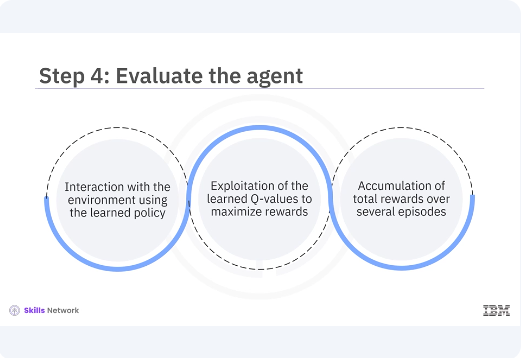
After training, you evaluate the agent by letting it interact with the environment using the learned policy. During evaluation, the agent should primarily exploit the learned Q-values to maximize rewards. The performance of the agent can be measured by the total rewards accumulated over several episodes.
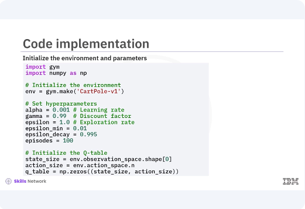
Here is the code implementation for each step, focusing on initializing the environment, building the Q-network, training the Q-network, and evaluating the agent. The CartPole environment is initialized using the gym.make function. This environment is a standard benchmark problem for reinforcement learning. Hyper parameters such as learning rate, discount factor, exploration rate, and the number of episodes are defined. The exploration rate Epsilon is initialized to 1.0 and decays over time to shift the agent's behavior from exploration to exploitation. The state size and action size are determined based on the environment's observation and action spaces respectively. A Q-table is initialized with zeros, although it is not used directly in the neural network approach.
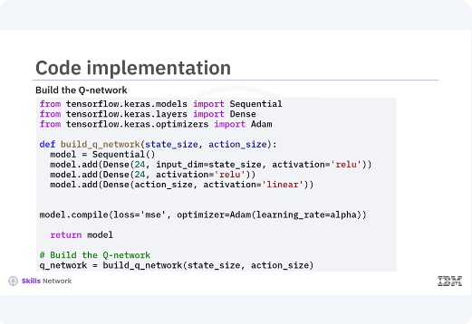
A neural network, Q-network, is built using Keras. The network consists of an input layer, two hidden layers with 24 neurons each and ReLU activation, and an output layer with a linear activation function. The atom optimizer and mean squared error loss function are used for training the network.
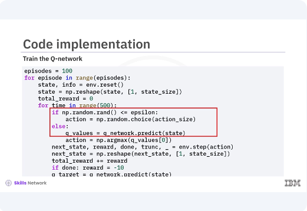
The training loop iterates over the specified number of episodes. For each episode, the environment is reset and the agent interacts with the environment for up to a maximum of 500 steps. An Epsilon greedy policy is used to select actions. With the probability of Epsilon, the agent selects a random action, exploration, and with the probability of one Epsilon, it selects the action with the highest Q-value exploitation. The agent takes the selected action, receives the next state and reward,
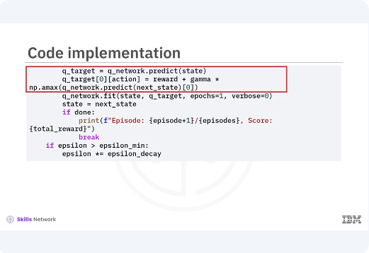
and updates the Q-values using the Bellman equation. The Q-network is trained to minimize the difference between the predicted Q-values and the target Q-values. The exploration rate Epsilon decays over time to balance exploration and exploitation. After training, the agent is evaluated by interacting with the environment using the learned policy. The environment is rendered to visualize the agent's behavior and the total reward for each episode is printed. During evaluation, the agent primarily exploits the learned Q-values to maximize rewards, demonstrating the effectiveness of the trained Q-network.
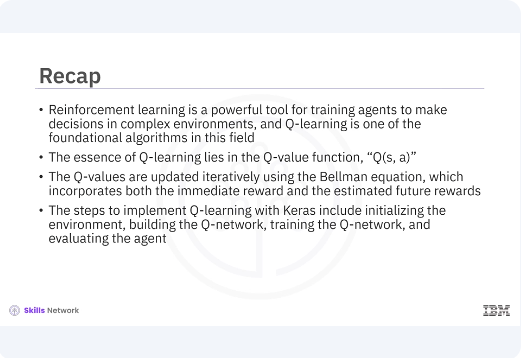
In this video, you learned reinforcement learning is a powerful tool for training agents to make decisions in complex environments and Q-learning is one of the foundational algorithms in this field. The essence of Q-learning lies in the Q-value function, Q(s, a). The Q-values are updated iteratively using the Bellman equation, which incorporates both the immediate reward and the estimated future rewards. The steps to implement Q-learning with Keras include initializing the environments, building the Q-network, training the Q-network, and evaluating the agent.